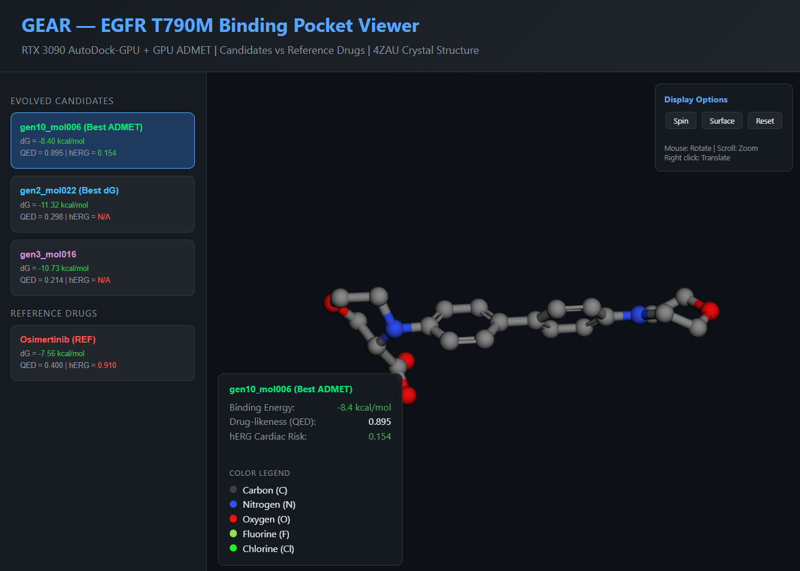
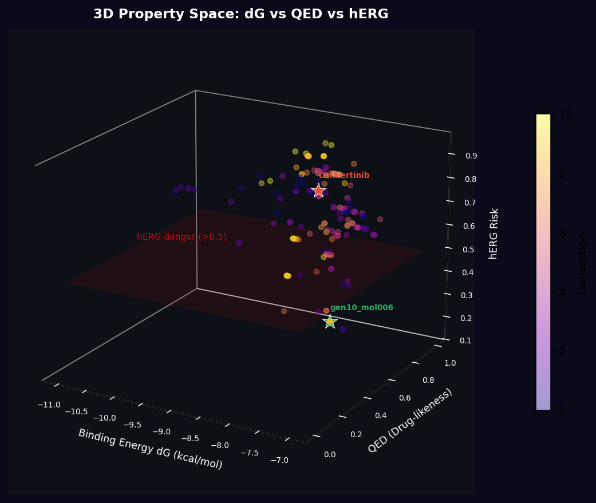
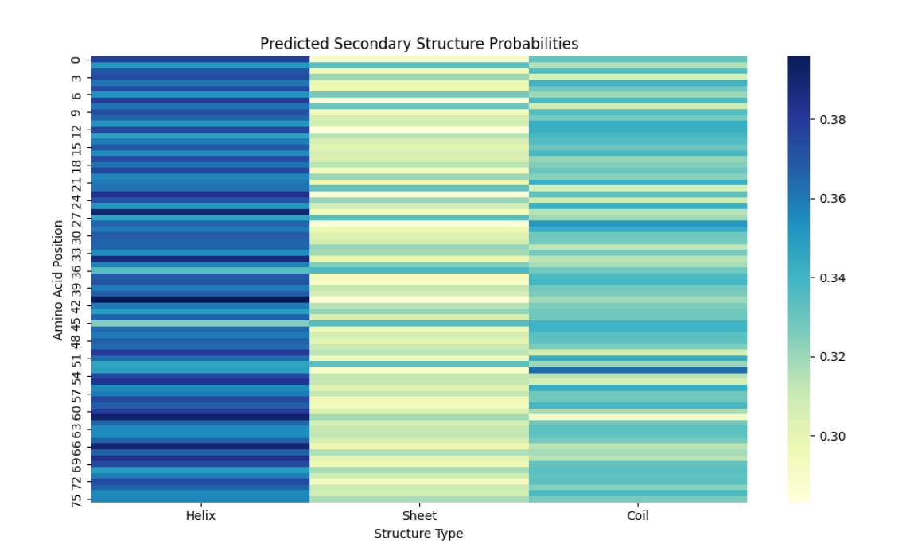

Hi, I'm Jihwan Oh
Independent Researcher
Bioinformatics & Biology
DigiPen Institute of Technology, BSCS RTIS — Cum Laude
About Me
Who I am
I graduated Cum Laude from DigiPen Institute of Technology (Redmond, WA) with a degree in Real-Time Interactive Simulation. Since then, I have been independently pursuing research at the intersection of computational biology and astrobiology — without institutional support, lab equipment, or funding.
My background in C++ systems programming and engine tool development has driven me toward a new question: how did life physically become complex? I approach this through both wet-lab experiments and computational modeling.
Research
Independent ProjectsThe "Space Butter" Hypothesis
2026
Investigated how intense tidal hydrodynamic shear — simulating early Earth's coastal environments — physically forces Saccharomyces cerevisiae into ECM streamer formation (aspect ratio: 11.97) and drives a 12.7-fold secondary bacterial ecosystem amplification. An astrobiological question addressed through microbiological means.
View PreprintGEAR — Drug Design Pipeline
2026
GPU-accelerated computational drug design pipeline targeting EGFR T790M resistance mutation. Genetic Algorithm + AutoDock-GPU + ADMET filtering on RTX 3090. Identified candidate molecule gen14_mol059 (dG = -10.86 kcal/mol), a +2.58 kcal/mol improvement over Osimertinib.
ProtMon — Structure Prediction
2025
A simplified AlphaFold-inspired protein secondary structure prediction pipeline. 1D CNN (PyTorch) trained to classify residues into Helix, Sheet, and Coil directly from amino acid sequences. Modular design with end-to-end automation.
Skills
Technical BackgroundBiology & Research
Computational
Publications
Preprints & ReportsThe "Space Butter" Hypothesis: Extreme Hydrodynamic Shear Drives Morphological Remodeling and Secondary Ecosystem Amplification
Zenodo. https://doi.org/10.5281/zenodo.19472867
View Preprint